Platform Changes
New API has been introduced to define references between the configurations and to build chosen configurations and their references. See org.eclipse.core.resources.IBuildConfiguration for further details.
Builders also now have access to a build context that can be used to discover the source of the build request, as well as the build configurations being built during the current build invocation. See org.eclipse.core.resources.IncrementalProjectBuilder#getContext for further details.
org.eclipse.help.base.searchProcessor allows for modification
of the search term, suggestion of alternate terms and modification of the list of search results.
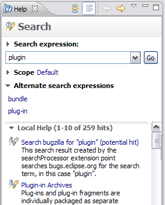
org.eclipse.help.base.display, allows for an alternate
web page instead of help/index.jsp to be opened when Help > Contents is invoked from the workbench menu.
org.eclipse.help.base/remote_css
allows the definition of a style sheet which is included in all help pages that
originated from a remote infocenter.
For example you can now ask if your bundle has been loaded yet to prevent your launch shortcut from appearing when it should not.
<enablement>
<with variable="selection">
<count value="1"/>
<iterate>
<and>
<test property="org.eclipse.my.bundle.tester" value="true"/>
<with variable="org.eclipse.core.runtime.Platform">
<test
args="org.eclipse.my.bundle"
property="org.eclipse.core.runtime.bundleState"
value="ACTIVE">
</test>
</with>
</and>
</iterate>
</with>
</enablement>
System.err shortly before
a test gets killed by the <java fork="true" timeout="${timeout}" ...> Ant task.
Where before, you just saw:
[java] Timeout: killed the sub-process
[java] Java Result: -1
You now get the process memory stats, followed by a stackdump of all threads, followed by the current focus control (with all its parents), and the open shells, e.g.:
[java] EclipseTestRunner almost reached timeout '7200000'.
[java] totalMemory: 260177920
[java] freeMemory (before GC): 195046224
[java] freeMemory (after GC): 244342384
[java] Thread dump at 2011-04-21 06:41:49 -0400:
[java] java.lang.Exception: Worker-JM
[java] at java.lang.Object.wait
[java] at org.eclipse.core.internal.jobs.InternalWorker.run
[java] ...
[java] java.lang.Exception: main
[java] at org.eclipse.swt.internal.win32.OS.WaitMessage
[java] at org.eclipse.swt.widgets.Display.sleep
[java] at pack.TestClass.testMethod
[java] ...
[java] FocusControl:
[java] Tree {}
[java] Shell {}
[java] Shells:
[java] visible: Shell {Java - Eclipse SDK}
[java] visible: Shell {}
The whole dump is repeated 5 seconds later. Since the code that prints the SWT information uses
display.syncExec(..), this may or may not influence a hung main thread.
Equinox Changes
The framework package is updated in several ways. First, generic types are added to existing API where appropriate. Second, new API is added to exploit generic type safety. In particular there is new API in the service registry to facilitate working with type parameters. Finally, in order to tidy up the overall framework API, an adapt method was added to the Bundle interface to allow it to be adapted to types in the new org.osgi.framework.wiring and org.osgi.framework.startlevel packages. These new packages replace the org.osgi.service.packageadmin and org.osgi.service.startlevel packages, respectively, both of which are now deprecated.
The tracker API is also updated to use generic types. A new constructor is added to ServiceTracker which take a class argument for type safety. New getTracked methods are added to both BundleTracker and ServiceTracker to return a map for keys to values.
OSGi has a requirement to support J2ME foundation 1.1, even with the introduction of generic API. For J2ME platforms, the OSGi API is compiled in a way that allows it to continue running on J2SE 1.4 based VMs (a compiler option known as jsr14). The Equinox core framework uses this option when it is built and we still support J2SE 1.4 and J2ME Foundation 1.1 runtime environments.
For more information see the upcoming OSGi Service Platform Release 4 Core and Compendium Version 4.3 Early Draft 3 available December 20th, 2010.
The framework hook specification provides a number of new mechanisms that closely interact with the built-in resolver and lifecycle layer of the framework. These interactions are not intended for use by application bundles. Modifying the behavior of the module and lifecycle layer requires developers to closely follow the semantics of the OSGi module and lifecycle model and this is often hard, requiring a significant amount of code. The resolver hook API is included in the org.osgi.framework.hooks.resolver package. The bundle event and find hooks are included in the org.osgi.framework.hooks.bundle package.
OSGi middleware developers may notice that the composite bundle specification and concept will not be included in the upcoming OSGi R4.3 Core Specification. The OSGi Core Expert Group decided against building the concept of composite bundles directly into the framework. Instead these new core framework hooks have been introduced to allow a layer on top to provide isolation in a similar fashion as the composite bundle concept from earlier OSGi draft specification proposals.
For more information see the upcoming OSGi Service Platform Release 4 Core and Compendium Version 4.3 Early Draft 3 available December 20th 2010.
To support bytecode weaving a new weaving hook is defined in the package org.osgi.framework.hooks.weaving. The weaving hook allows a hook implementation to manipulate the bytecode of a class before it is defined by an OSGi class loader. In cases where the class dependency graph has changed, a weaving hook is able to add additional package constraints to the bundle that is being woven.
For more information see the upcoming OSGi Service Platform Release 4 Core and Compendium Version 4.3 Early Draft 3 available December 20th 2010.
New OSGi bundle manifest headers are introduced to declare arbitrary provided capabilities (Provide-Capability) and requirements on them (Require-Capability). These headers impact the resolution of the bundles involved and the dependencies among them, but have no other impact. It is predicated solely on the existence of declared capabilities to satisfy declared requirements and nothing more.
Those familiar with Equinox may notice a similarity between the generic dependency model in OSGi R4.3 and the Equinox specific manifest headers Eclipse-GenericCapability and Eclipse-GenericRequire. The OSGi R4.3 generic dependency model provides an equivalent and standard way for defining generic capabilities and requirements. Developers are encouraged to migrate off the Equinox specific headers to the new OSGi headers for generic capabilities and requirements.
For more information see the upcoming OSGi Service Platform Release 4 Core and Compendium Version 4.3 Early Draft 3 available December 20th 2010.
The package org.osgi.service.log contains the OSGi LogService API and org.eclipse.equinox.log contains the Equinox extended OSGi log service API. Both packages are exported by the core framework (org.eclipse.osgi). All eclipse logging APIs are now aggregated through the org.eclipse.equinox.log.Logger with the name org.eclipse.equinox.logger. All ILogListener instances will be notified of entries logged through this logger. OSGi LogListener instances will also be notified of entries logged through this logger as well as entries logged through any other logger. The ExtendedLogReaderService in Equinox also allows OSGi LogListener instances to listen to specific loggers through the use of a filter.
To maintain repository compatibility between different versions of Eclipse, most of these savings will only be realized when reading repositories generated with a 3.7 M4 or later Eclipse.
You can look forward to additional improvements which did not make it into this Milestone, but will be included in the next Milestone.
<touchpointData ...>
<instructions ...>
<instruction key='configure'>
setJvm(jvm:/usr/bin/java);
</instruction>
...
</touchpointData>
You can also incrementally add program property arguments. This is useful particularly for the case where you have a property in the config.ini file whose value is a comma-separated list. Calling addProgramProperty will add the value to the end of the list and calling removeProgramProperty will remove it from the list. If it is the only item in the list and it is removed, then the property itself is removed.
<touchpointData ...>
<instructions ...>
<instruction key='configure'>
addProgramProperty(propName:myKey,propValue:myValue);
</instruction>
<instruction key='unconfigure'>
removeProgramProperty(propName:myKey,propValue:myValue);
</instruction>
...
</touchpointData>
You call the director application with the -tag <tagName> argument to set the tag.
d:\builder\eclipse.exe -application org.eclipse.equinox.p2.director -repository http://download.eclipse.org/releases/helios/ -installIU org.eclipse.cdt.feature.group -tag AddCDT -destination d:/eclipse/ -profile SDKProfile
To get a list of tags for a particular profile, invoke the application with the -listTags argument.
d:\builder\eclipse.exe -application org.eclipse.equinox.p2.director -listTags -profile SDKProfile
The list of tags is also available from the About Eclipse -> Installation Details -> Installation History view.
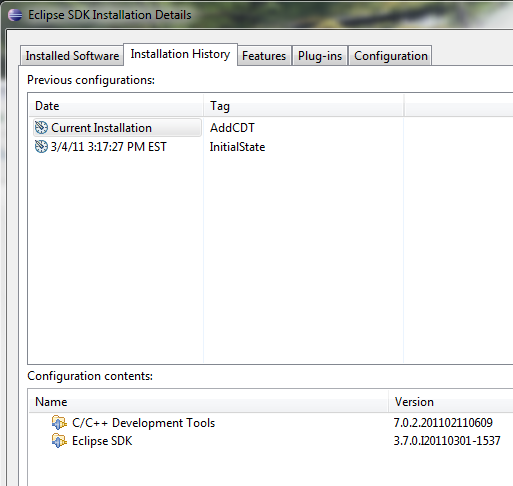
d:\builder\eclipse.exe -application org.eclipse.equinox.p2.director -repository http://download.eclipse.org/releases/helios/ -installIU org.eclipse.cdt.feature.group -downloadOnly -destination d:/eclipse/ -profile SDKProfile
SWT Changes
SWT.WEBKIT
will use WebKit on Windows, Linux and OS X, provided that the user's machine satisfies the
runtime requirements.
For an example of using WebKit see Snippet 351.
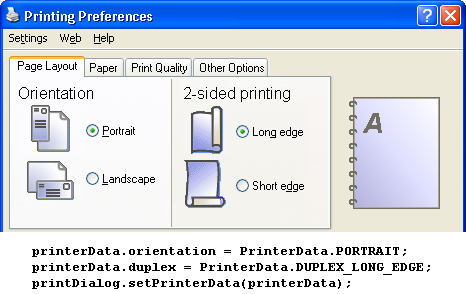
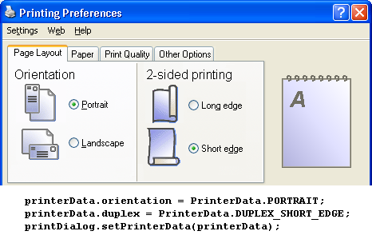
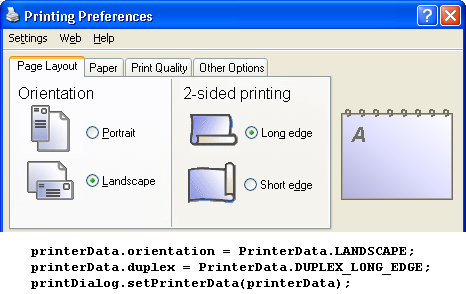
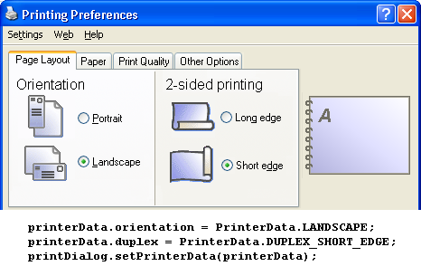
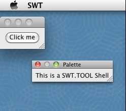

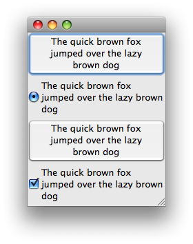
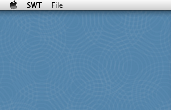
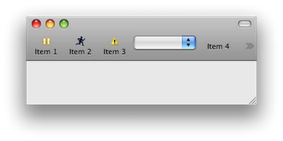
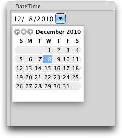
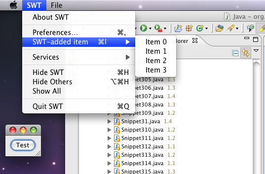
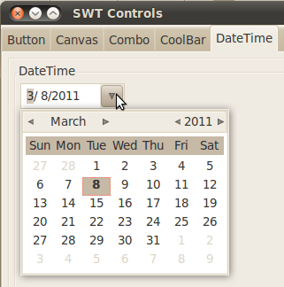